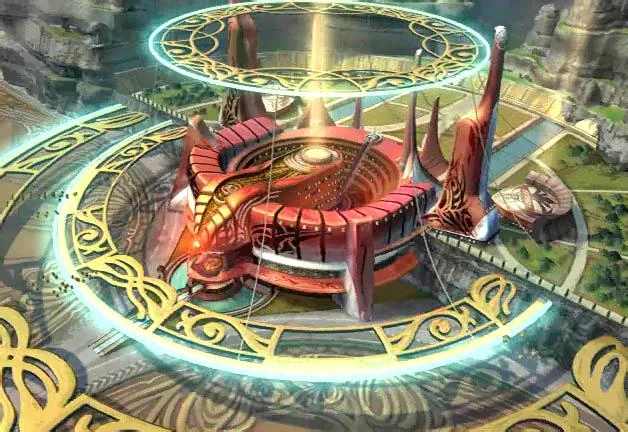
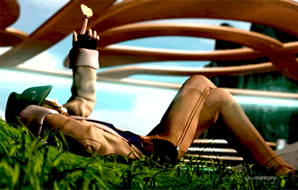
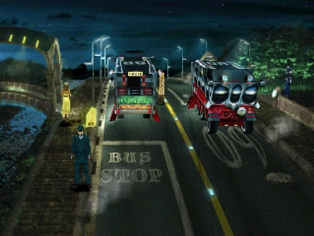

Jardin de Galbadia
Tras volver a visitar a Laguna y sus compañeros, recuperamos el control de nuestros protagonistas. Comprueba los Enlaces, porque puede que hayan cambiado debido a la secuencia. El Jardín de Galbadia, nuestro objetivo, está muy cerca, justo a tu izquierda nada más salir del bosque. Avanza hasta ver una secuencia y accede a la zona central del Jardín. Ve recto, hasta ver a unos estudiantes haciendo flexiones, y sube por la escalera. Entra en la habitación que verás justo al lado al subir y habla con todos los personajes. Cuando Squall se quede solo, vuelve hasta los tornos de entrada, habla con Quistis y luego regresa a la entrada del Jardín. Habla con Rinoa para activar una secuencia.
Después de presentarte a Irvine, te darán el tutorial sobre cambio de grupos. Una advertencia: si decides ir con Irvine, no uses las Balas iónicas para su Límite. Son un bien escaso y las queremos para conseguir el arma final de Squall. Necesitas al menos 12, tenlo en cuenta. Para continuar, sube al tren que está junto al Jardín. Paga los 3.000 guiles al revisor en lo alto de las escaleras y pa'dentro, que pagar pa ná es tontería. Una vez a bordo, ve a hablar con Selphie al otro vagón, y luego regresa con Zell, Rinoa y Quistis para ver qué pasa. No tardarás en llegar a Deling. Abandona la estación por el único camino posible
Puedes explorar tranquilamente la ciudad si lo deseas, si no, desde la estación, ve hacia la derecha y luego hacia abajo y luego otra vez hacia abajo Llegarás a una calle en la que verás un gran arco al fondo y tres autobuses que paran delante de tres tipos vestidos de verde. El de la esquina superior derecha te lleva a la Residencia Calway, sin embargo, al querer ir hacia la derecha pare entrar, un soldado de Galbadia te lo impide, y te explica las condiciones para entrar. Si quieres, puedes pedirle un Visualizador de ubicación por 5.000 guiles. Te será más fácil ubicarte en la siguiente mazmorra, asi que si eres nuevo en el juego, te recomiendo pagarlo, sino, puedes usar tu memoria. Luego pídele que te lleve a la salida de la ciudad. Nuestro siguiente destino es La tumba del Rey sin Nombre.
